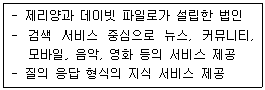
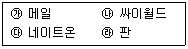

인터넷정보관리사-2급 (2009-09-06 기출문제)
1과목: 인터넷의 이해
1. 인터넷 관련 문서 중 인터넷과 관련된 기초적이고 일반적인 정보를 제공하며, 일반인들에게 홍보하기 위한 문서는?
- I-Ds
- RFC
- IMR
- FYI
(정답률: 24%)

2. IP 클래스 중 국가나 대형 통신망에 사용되는 클래스는?
- A 클래스
- B 클래스
- C 클래스
- D 클래스
(정답률: 64%)
3. 인터넷 도메인 네임을 구성하는 구성요소가 아닌 것은?
- 국가표시
- 기관명
- 기관의 구분
- 웹서버의 종류
(정답률: 42%)
4. 올해 정부 계획에 따라 3개의 기관이 7월 23일부로 통합되어 Korea Internet & Security Agency로 새로이 출범하게 되었다. 여기서 통합과 관련된 기관이 아닌 하나는?
- 한국정보보호진흥원
- 한국전파진흥원
- 정보통신국제협력진흥원
- 한국인터넷진흥원
(정답률: 50%)
5. 인터넷 주소 체계에 대한 설명으로 틀린 것은?
- 167.15.122.151은 IP 클래스 분류 중 B 클래스에 해당한다.
- 127.0.0.1은 호스트 자신의 가상 인터페이스를 나타내는데 사용된다.
- 차세대 IP 주소 체계인 IPv6는 128bit로 이루어져 있다.
- IP 주소 체계인 IPv4는 64bit로 이루어져 있으며, 8진수 숫자로 표현된다.
(정답률: 64%)
6. nTLD(국가별 최상위 도메인)으로 바르게 연결된 것은?
- 북한 : pk
- 영국 : en
- 프랑스 : fr
- 중국 : ca
(정답률: 65%)
7. 네트워크 관리기관에 부여되는 최상위 도메인은?
- com
- net
- int
- edu
(정답률: 알수없음)
8. 인터넷에서 사용할 수 없는 주소는?
- 52.120.32.45
- 210.21.236.284
- 176.2.2.2
- 169.125.82.15
(정답률: 40%)
9. 한국과학기술원 홈페이지 주소로 맞는 것은?
- http://www.kaist.co.kr
- http://www.kaist.re.kr
- http://www.kaist.ac.kr
- http://www.kaist.or.kr
(정답률: 50%)
10. 전자우편 주소의 표기법으로 가장 올바른 것은?
- IP주소@도메인 이름
- 사용자ID@도메인 이름
- 사용자ID@포트번호
- IP주소@사용자ID
(정답률: 64%)
11. 전자우편의 헤더만 다운로드하고 본문은 서버에 보관하고 있다가 제목을 클릭하면 편지내용이 다운로드 되는 프로토콜은?
- IMAP
- SMTP
- POP
- FTP
(정답률: 43%)
12. FTP 명령어가 틀린 것은?
- mget : 여러 개의 파일을 원격 시스템에서 다운로드
- mput : 여러 개의 파일을 원격 시스템으로 업로드
- hash : 파일의 전송 상황을 ‘#’으로 표시
- lcd : 사용 가능한 명령어 출력
(정답률: 25%)
13. 알FTP 버전 5.1의 메뉴에 대한 설명이 잘못된 것은?
- 사이트 맵 : 접속할 사이트에 대한 정보를 갖고 있으며 사이트를 선택할 수 있다.
- 접속하기 : 접속할 사이트에 대한 사용자 ID, 비밀번호 등의 정보를 입력하여 접속한다.
- 전송타입 : 전송하려는 메시지의 종류를 반드시 아스키(A)나 바이너리(B) 중에서 하나를 선택하여야 하며, 프로그램이 자동으로 선택하는 것이 불가능하다.
- 업로드 : 사용자의 로컬 컴퓨터에 있는 파일을 서버 쪽으로 전달하는 기능을 제공한다.
(정답률: 50%)
14. 유즈넷 뉴스그룹은 주제에 따라 여러 개의 계층 구조를 이루고 있다. 각 계층구조별로 다루고 있는 주제가 잘못 연결된 것은?
- comp : 운영체계, 하드웨어 등 컴퓨터와 관련된 내용을 다룬다.
- sci : 천문학, 생물학 등 과학에 관련된 내용을 다룬다.
- rec : 교육과 관련된 기술과 커리큘럼에 관한 주제를 다룬다.
- talk : 정치, 종교 기타 활발한 논쟁을 야기하는 주제를 다룬다.
(정답률: 50%)
15. 유즈넷에서 사용하는 용어에 대한 설명으로 틀린 것은?
- 가입(subscribe) : 특정한 뉴스그룹의 기사를 보거나 해당 뉴스 그룹에 글을 등록하기 위해 참여하는 것
- 포스팅(posting) : 특정한 뉴스 그룹에 자신의 글을 등록하거나 파일을 올리는 것
- 헤더(Header) : 올려진 기사에 글의 제목, 글쓴이 등 해당 기사에 대한 정보를 담고 있는 부분
- 다이제스트(digest) : 중재자 또는 관리자가 있는 그룹
(정답률: 40%)
16. 다음 중 채팅 프로그램이 아닌 것은?
- PC그린
- 버디버디
- ICQ2Go
- AOL Instant Messenger
(정답률: 알수없음)
17. NateOn 4.0의 [동작]메뉴에 해당하지 않는 것은?
- 문자 보내기
- 문자대화 하기
- 쪽지 보내기
- 바이러스 검사하기
(정답률: 75%)
18. 비행기, 선박, 자동차뿐만 아니라 세계 어느곳에서든지 인공위성을 이용하여 자신의 위치를 정확히 알 수 있는 시스템을 뜻하는 용어는?
- WIPI
- GPS
- CRM
- EDI
(정답률: 77%)
19. 전자적 방식을 이용하여 가상공간에서 이루어지는 거래행위를 전자상거래라고 한다. 이러한 전자상거래에 대한 설명으로 가장 적절하지 않은 것은?
- 제품 사양이 표준화되고 경쟁이 심화되어 제품의 품질이 개선된다.
- 잠재고객에 대하여 쉽고 저렴한 마케팅이 가능하여 신규시장 개척이 용이하다.
- 전자적으로 개방된 시장에서 공급업체간 경쟁이 강화되어 구매자 비용이 증가된다.
- 지리적 거리를 초월한 새로운 시장 개척이 가능하다.
(정답률: 62%)
20. 저작권법상 출판권의 존속기간에 대한 설명으로 옳은 것은?
- 설정행위에 특약이 없을 때에는 맨 처음 출판한 날로부터 3년간 존속한다.
- 설정행위에 특약이 없을 때에는 맨 처음 출판한 날로부터 50년간 존속한다.
- 설정행위에 특약이 없을 때에는 맨 처음 출판한 다음해부터 50년간 존속한다.
- 생존시 출판한 날로부터 50년간, 그리고 사후 10년간 존속한다.
(정답률: 알수없음)
21. 전자서명법 제15조 공인인증서의 발급과 관련하여 공인인증 기관이 발급하는 공인인증서에 포함되어야 하는 사항이 아닌 것은?
- 가입자의 이름
- 가압자의 전자서명검증정보
- 공인인증서 발행 단가
- 공인인증서의 유효기간
(정답률: 64%)
22. 본문의 내용과는 상관없는 악의적인 리플을 반복해서 달아놓는 사람을 무엇이라고 하는가?
- 스패머
- 악플러
- 크래커
- 리플러
(정답률: 59%)
23. 통신비밀보호법에 대한 설명으로 틀린 것은?
- 공개되지 아니한 타인간의 대화는 청취할 수 있으나, 녹음 및 저장할 수는 없다.
- 통신은 우편물 및 전기통신을 포함한다.
- 원칙적으로 우편물은 검열할 수 없다.
- 검열 및 감청은 범죄수사 및 국가안전보장을 위한 보충적 수단으로 이용할 수 있다.
(정답률: 42%)
24. Telnet에서의 네티켓으로 가장 올바른 것은?
- 멀티미디어 정보만 선별하여 전송하며, 전송속도나 효율적인 면은 고려하지 않아도 된다.
- 동시 접속하여 서버의 부하를 많이 주는 것이 바람직하다.
- 공지사항은 호스트의 서비스 내용과 특별 사항을 안내하기 때문에 반드시 읽는 것이 좋다.
- 용량이 큰 파일은 압축 없이 올리는 것이 올바른 행동이다.
(정답률: 알수없음)
25. 다음 중 올바른 네티켓이 아닌 경우는?
- 자료를 인용하고자 할 때는 출처를 반드시 밝힌다.
- 어떤 주제에 대한 논쟁은 감정을 절제하여 진행한다.
- 채팅 시에는 반드시 이모티콘을 사용해야 한다.
- 상대방의 사생활을 존중한다.
(정답률: 72%)
26. FTP 사용시 네티켓으로 올바르지 않은 것은?
- 파일을 올릴 때에는 바이러스 검사를 철저히 한다.
- 필요한 자료만 업로드ㆍ다운로드한다.
- 파일을 송ㆍ수신할 때는 업무시간을 피해서 하는 것이 좋다.
- 상용 프로그램인 경우는 설치에 필요한 고유키 값을 같이 올려야 한다.
(정답률: 50%)
27. 컴퓨터의 구성 요소 중 주기억 장치에 속하지 않는 것은?
- ROM
- RAM
- CD-ROM
- 캐시 메모리
(정답률: 42%)
28. 다음 중 나머지 셋과 용도가 가장 다른 프로그램은?
- ALZIP
- WinZip
- WinRAR
- QuickTime
(정답률: 73%)
29. 여러 명의 사용자가 하나의 단말기에서 시간을 나누어 사용하는 방식으로 마치 혼자서 사용하는 것처럼 이용하는 것은?
- 시분할처리
- 일괄처리
- 실시간처리
- 다중처리
(정답률: 72%)
30. 워드프로세서 용어에 대한 설명으로 틀린 것은?
- 위지윅 : 화면에 보이는 그대로 출력할 수 있다.
- 각주 : 해당 페이지 아래쪽에 위치한 문서 내의 단어 또는 문장의 보충 설명이다.
- 워드랩 : 여러 사람에게 보낼 초대장을 작성하는 것이다.
- 스타일 : 몇 가지 표준서식을 설정하여 공통으로 사용되는 문단에 적용한다.
(정답률: 50%)
31. 전용선을 속도에 따라 종류를 나눌 때 전송속도가 느린 것에서 빠른 순서로 왼쪽부터 바르게 나열 된 것은?
- T1→E1→T2→T3
- T1→T2→E1→T3
- T3→T2→E1→T1
- T3→T2→T1→E1
(정답률: 43%)
32. ISDN의 채널 중 B채널의 전송 속도는?
- 32kbps
- 64kbps
- 128kbps
- 256kbps
(정답률: 67%)
33. ADSL에 대한 설명으로 틀린 것은?
- 기존 전화선을 그대로 사용할 수 있다.
- 미국의 벨코어가 VOD 상용화 서비스를 위하여 개발한 기술이다.
- 원격진료, 원격회의, 영상회의 등의 양방향 서비스를 이용하기에 가장 적합하다.
- 비대칭 디지털 가입자 회선이라 부른다.
(정답률: 알수없음)
2과목: 인터넷 자원 탐색
34. 전용선을 이용한 인터넷 접속과 가장 관련이 없는 것은?
- Hub
- Router
- U-Card
- LANcard
(정답률: 알수없음)
35. 케이블 TV망을 이용한 인터넷 접속에 대한 설명으로 틀린 것은?
- 케이블 TV망이 설치된 지역에서만 서비스가 가능하다.
- 전화선 모뎀이나 ISDN에 비해 Mbps급 이상의 초고속 통신이 가능하다.
- 인터넷 서비스를 받으려면 케이블 모뎀과 네트워크 카드 등의 장비가 필요하다.
- 24시간 인터넷 이용은 일반적으로 불가능 하다.
(정답률: 82%)
36. VDSL의 약자에 대한 설명으로 가장 바르게 된 것은?
- Very high-data rate Digital Subscriber Line
- Very high Direct Supply Line
- Virtual Digital Support Line
- View Data Subject Line
(정답률: 알수없음)
37. 인터넷에서 방화벽(Firewall)에 대한 설명으로 틀린 것은?
- 전용통신망에 불법 사용자들이 접근하여 중요한 정보들을 불법으로 외부에 유출하는 행위를 방지하는 것이 목적이다.
- 외부로부터의 접속을 필요에 따라 조정 할 수 있다.
- 허가되지 않은 사용자의 접근 차단 기능은 현재 불가능하다.
- 종류로는 패킷 필터링 방화벽, 이중 홈 게이트웨이 방화벽 등이 있다.
(정답률: 84%)
38. 블루투스에 대한 설명으로 틀린 것은?
- 근거리 무선통신을 위한 산업표준기술이다.
- 덴마크왕 헤럴드 블루투스에서 유래되었다.
- 무선 헤드셋, 무선 파일 전송 등 실생활에서 다양하게 사용되고 있다.
- 인공위성 자동위치 측정 시스템을 말하는 것이다.
(정답률: 74%)
39. 하이퍼텍스트, 하이퍼미디어 및 다른 미디어를 연결하는 것을 의미하며, 웹 브라우저에서는 링크된 부분의 색을 일반텍스트의 색과 달리 설정하기도 한다. URL의 형식에 따라 특정 문서나 파일의 위치를 찾아갈 수 있도록 하는 기능을 제공하는 것을 뜻하는 용어는?
- CGI
- Plug-in
- Hyperlink
- UCC
(정답률: 67%)
40. HTML 문서에 'image.jpg'라는 그림파일을 삽입한 후 이 그림을 'http://www.ihd.or.kr' 로 링크하려고 할 때의 올바른 태그는?
- <a link="http://www.ihd.or.kr"><img src="image.jpg"></a>
- <img src="image.jpg"><a link="http://www.ihd.or.kr"></a>
- <a href="http://www.ihd.or.kr"><img src="image.jpg"></a>
- <img src="image.jpg"><a href="http://www.ihd.or.kr"></a>
(정답률: 15%)
41. RGB 코드에서 검정색을 나타내는 것은?
- #FF0000
- #00FF00
- #000000
- #FFFFFF
(정답률: 31%)
42. HTML 문자 속성 태그 중, 아래 문자 첨자로 표현하기 위해 사용하는 태그는?
- <sub>
- <small>
- <frameset>
- <pre>
(정답률: 54%)
43. HTML 링크 관련 태그에서 현재의 프레임으로 들어오기 전의 한단계 상위 페이지로 이동하기 위해 사용하는 속성은?
- target=_top
- target=_self
- target=_parent
- target=_blank
(정답률: 10%)
44. 특수 기호를 나타내는 태그의 연결이 올바른 것은?
- > : <
- 공백 :
- < : >
- 저작권표시 : &
(정답률: 40%)
45. 동영상 파일의 확장자로 틀린 것은?
- MOV
- WMV
- BMP
- ASF
(정답률: 50%)
46. 멀티미디어 관련 용어 중, 자주 사용하는 다양한 그림을 모아둔 작은 그림 모음집을 뜻하는 용어는?
- 클립아트
- 리터칭
- 랜더링
- 오버프린트
(정답률: 72%)
47. 멀티미디어의 실현배경이라고 보기 가장 어려운 것은?
- 디지털 기술 발전
- 아날로그 기술 발전
- 영상 압축기술 발전
- 하드웨어 기술 발전
(정답률: 40%)
48. 팔레트를 사용하는 8비트 컬러만을 지원하는 압축파일로 사진의 경우는 압축효과가 크지 않으나, 일러스트레이션용으로 제작된 그래픽 파일의 경우 압축효과가 높은 이미지 파일은?
- TIFF
- PCX
- ASF
- GIF
(정답률: 60%)
49. 웹 브라우저가 자체적으로 실행하지 못하는 파일 형식들을 지원하기 위해 자동 설치되어 브라우저의 기능을 확장해 주는 외부 프로그램을 무엇이라 하는가?
- 업로드(Upload) 프로그램
- 플러그인(Plug-in) 프로그램
- 임베디드(Embedded) 프로그램
- 번들(Bundle) 프로그램
(정답률: 80%)
50. 웹(Web)에 대한 설명으로 틀린 것은?
- 클라이언트/서버 구조로 이루어진 분산 하이퍼텍스트 시스템이다.
- 웹에서 사용하는 기본 프로토콜은 SMTP 프로토콜을 사용한다.
- 웹은 텍스트뿐만 아니라 대부분의 멀티미디어 파일 형태를 지원한다.
- WWW는 World Wide Web의 약자이다.
(정답률: 80%)
51. (주)그래택에서 개발한 것으로, AVI, WMV 등 동영상 파일 재생, 영상캡쳐 등이 기능이 있는 프로그램은?
- Winamp
- Cosmo Player
- Gom Player
- QuickTime
(정답률: 59%)
52. 인터넷에서 주로 사용되는 확장자와 웹 브라우저의 플러그인 프로그램을 짝지은 것으로 틀린 것은?
- txt : Notepad
- xls : Microsoft Excel
- jpg : Windows Media player
- wrl : Cosmo Player
(정답률: 60%)
53. 미국 캔사스 대학의 로우 몬틀리가 유닉스 VMS 운영체제 사용자들을 위해 개발한 텍스트 기반 웹 브라우저는?
- Mosaic
- Samba
- Lynx
- Arachne
(정답률: 알수없음)
54. 인터넷 익스플로러 7.0에서 브라우저 화면에 보여지는 텍스트 크기를 지정하고자 할 때 선택해야 하는 메뉴는?
- [파일]
- [편집]
- [보기]
- [도움말]
(정답률: 40%)
55. 다음 중 구글에서 개발한 웹 브라우저는?
- 파이어폭스
- 크롬
- 오페라
- 인터넷 익스플로러
(정답률: 알수없음)
56. 인터넷 익스플로러 7.0에서 사용되는 단축키의 연결이 틀린 것은?
- 이 페이지에서 찾기 : Ctrl + F
- 새로고침 : F5
- 전체화면 : F11
- 중지 : F10
(정답률: 40%)
57. 인터넷 익스플로러 7.0의 [인터넷 옵션]-[고급]에 있는 항목이 아닌 것은?
- 사진표시
- 이미지 디더링
- LAN 설정
- 배경색 및 이미지 인쇄
(정답률: 20%)
58. 인터넷 익스플로러 7.0에서 임시 인터넷파일을 삭제하고자 할 때의 경로로 올바른 것은?
- [인터넷 옵션]→[일반]
- [인터넷 옵션]→[보안]
- [인터넷 옵션]→[프로그램]
- [인터넷 옵션]→[연결]
(정답률: 46%)
59. 인터넷 익스플로러 7.0에 대한 설명으로 틀린 것은?
- 단일 브라우저 창에서 여러 웹 사이트를 열 수 있도록 하는 탭 검색을 지원한다.
- 주소 표시줄에서 인터넷 한글 키워드 시스템이 지원된다.
- 팝업 차단 기능은 존재하지 않는다.
- 임시 파일, 쿠키, 웹페이지 기록, 저장된 암호 등을 한 곳에서 삭제할 수 있다.
(정답률: 60%)
60. 인터넷 익스플로러 7.0에서 프레임 구조로 되어 있지 않은 웹 사이트의 절대주소를 알려보려고 한다. 보기메뉴에서 선택해야 할 항목은?
- 즐겨찾기
- 인코딩
- 소스
- 전체화면
(정답률: 59%)
61. 인터넷 익스플로러 7.0에서 등급을 사용하여 볼 수 있는 인터넷 내용을 제한하여 폭력적이거나 선정적인 단어들을 사용하는 경우 접근을 금지하는 기능을 설정 할 수 있는 곳은?
- [인터넷 옵션]→[일반]
- [인터넷 옵션]→[개인정보]
- [인터넷 옵션]→[내용]
- [인터넷 옵션]→[프로그램]
(정답률: 54%)
62. ‘인터넷’이라는 키워드를 검색하여 특정 검색엔진에서 검색된 정보가 150개이고, 이 중 45개가 적합한 정보로 판정되었다면 이 검색엔진의 정확율은?
- 20%
- 30%
- 45%
- 55%
(정답률: 54%)
63. 검색엔진의 구성요소인 로봇에 대한 설명으로 가장 적절하지 않은 것은?
- 자료 수집 기능을 한다.
- 가장 먼저 인덱싱하는 것은 웹페이지의 제목 등 몇 개 주요 문장만을 인덱싱한다.
- 인덱싱하는 내용과 전략은 모든 로봇이 완전 동일하다.
- 네트워크를 돌아다니며 트래픽을 발생시킬 수 있으며, 속도가 느려지게 할 수 있다.
(정답률: 60%)
64. 미국의 업종별 전화번호를 의미하지만, 인터넷 사이트에서는 사이트 목록을 분야별로 정리해 놓은 것을 뜻하는 용어는?
- Phone Page
- White Page
- Search Page
- Yellow Page
(정답률: 알수없음)
65. 우리나라 대부분의 웹사이트에서는 회원가입이나 주요 서비스를 이용하기 위해 주민번호를 입력하여 본인확인을 받도록 되어 있으나, 웹 사이트에 주민번호를 제공하지 않고 인터넷을 이용할 때, 주민번호 대신 사용할 수 있도록 만들어진 것은?
- DDos
- i-PIN
- IPv6
- Nickname
(정답률: 75%)
66. 인터넷 검색엔진의 구성요소 중 로봇이 정리한 웹 페이지의 내용을 저장하고 있는 거대한 도서관으로 카탈로그(Catalog)라고도 하는 것은?
- 색인기(Indexer)
- 크롤러(Crawler)
- 스쿠터(Scooter)
- 웜(Worm)
(정답률: 59%)
3과목: 인터넷 윤리
67. 다음 특성을 가지고 있는 검색엔진은?

- 네이버
- 구글
- 네이트
- 야후
(정답률: 59%)
68. 관심 분야의 정보를 검색하기 위해 인터넷에서 사용자가 가장 먼저 접속하는 관문, 입구의 역할을 하는 종합정보제공 사이트를 뜻하는 용어는?
- 허브 사이트
- 포털 사이트
- 멀티 사이트
- 인증 사이트
(정답률: 58%)
69. 정보검색 결과를 평가하는 요소 중 재현율과 정확율이 있다. 정확한 정보검색을 위한 재현율과 정확율의 관계를 올바르게 표현한 것은?
- 재현율의 수치가 높고, 정확율은 낮아야 한다.
- 재현율의 수치가 낮고, 정확율은 높아야 한다.
- 재현율과 정확율의 수치가 모두 높아야 한다.
- 재현율과 정확율의 수치가 모두 낮아야 한다.
(정답률: 47%)
70. 정보검색의 목적으로 가장 올바른 것은?
- 대량의 정보 중 필요한 정보를 신속 정확하게 찾는 것
- 전문 데이터베이스를 이해하는 것
- 각종 검색엔진의 특징을 파악하는 것
- 정보의 바다를 서핑하면서 여러 정보를 삭제해 보는 것
(정답률: 48%)
71. 검색엔진 네이버에 대한 설명으로 틀린 것은?
- 궁금한 사항을 질문할 수 있는 지식인 서비스를 운영하고 있다.
- 연예인, 정치인 등 국내외 주요 인물들의 정보를 조회하는 인물검색 서비스를 제공한다.
- 블로그 서비스는 현재 중단된 상태이다.
- 찾고자하는 지역을 검색하는 지도검색 서비스가 제공된다.
(정답률: 알수없음)
72. 올바른 정보검색 기법으로 볼 수 없는 것은?
- 경우에 따라 검색엔진에서 제공하는 연산자를 적절히 활용한다.
- 찾고자 하는 정보의 형태에 따라 적합한 검색엔진을 사용한다.
- 키워드 선정 시 주제와 관련된 것을 입력 한다.
- 유명하거나 인기 있는 한가지 검색엔진만을 이용하는 것이 바람직하다.
(정답률: 77%)
73. InfoSeek라는 검색엔진의 새로운 이름은?
- Go.com - http://go.com
- Google - http://www.google.com
- Paran- http://www.paran.com
- Naver- http://www.naver.com
(정답률: 43%)
74. 네이트(nate)에서 제공하는 서비스로만 묶인 것은?

- ㉮, ㉯
- ㉯, ㉰
- ㉮, ㉯, ㉰
- ㉮, ㉯, ㉰, ㉱
(정답률: 47%)
75. 국내에서 개발된 검색엔진으로 올바르게 짝지어진 것은?
- 야후, 다음
- 구글, 야후
- 네이트, 파란
- 네이버, 라이코스
(정답률: 42%)
76. 로봇이 웹 사이트에 접근하는 것을 방지하고 로봇으로부터의 피해를 최소화하기 위해 1994년에 제안된 규약은?
- Robot Exclusion Standard
- Robot Explain Sector
- Robot Emulator Standard
- Robot Embedded Service
(정답률: 알수없음)
77. 검색관련 용어 중 검색되었어야 함에도 불구하고 잘못된 검색어의 사용으로 누락된 정보를 일컫는 말은?
- 서지
- 개비지
- 리키지
- 크롤러
(정답률: 47%)
78. 다음 중 1차 정보인 것은?
- 색인지
- 학술잡지
- 초록지
- 목차지
(정답률: 54%)
79. 정보 검색사의 역할 중 수집된 자료나 정보를 필요한 사람에게 제공해주는 역할은?
- 정보 비교인 역할
- 정보 중개인 역할
- 정보 상담자 역할
- 정보 분석가 역할
(정답률: 47%)
80. 정보의 특징으로 틀린 것은?
- 동일한 정보가 사용자에 따라 다른 가치나 의미가 부여될 수 있다.
- 동일한 정보는 다수의 사람이 동시에 공유할 수 없다.
- 정보의 구입시 정보원의 신용이 중요한 판단 기준이 된다.
- 정보를 적절한 형태로 저장하여 보관할 수 있다.
(정답률: 79%)